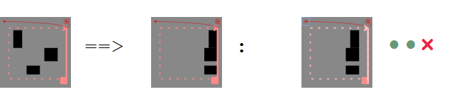

The iconic programming language `clip_8` is inspired by the principles of manipulating cardboard pieces with a cutter. Each operation applies to graphical content. The instructions, in turn, are themselves given in a graphical form.
The reference test sheets define the language. At the same time, they test the current engine in the browser at hand. For each feature you can see whether it is actually available in that particular configuration. Appendix B defines the tests that are exected to pass, given the current version of the engine.

The first box shows the precondition, before the instruction.
The second box the desired result or postcondition.
The third box after the colon is the test itself.
The interpreter will try to execute the contained program in the third box. What you will see is the actual result after the (successful?) execution. If you have slow hardware you might see the execution process: Some rectangle might be jumping or changing size, when reloading the test sheet.
For each reference test there are three checks to be done. Each result is indicated by a green dot or a red cross, after the graphical reference test areas.
The first test is a selftest: it checks whether precondition and test area match before the execution.
The second test checks success of execution: It will fail on runtime errors or infinite execution.
The third test checks whether test and postcondition match after execution.